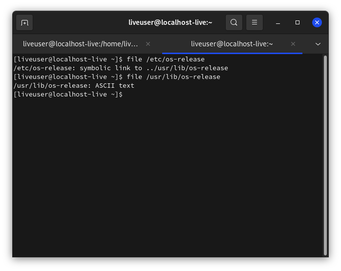

Строение Linux - часть 2. Принцип "всё есть файл", виды файлов.
В первой части статьи речь была об общем строении системы. Так сказать, галопом по европам. А в следующих частях строение Linux будет описано подробнее. Каждая статья описывает только одну тему.
Для начала стоит написать о концепции "всё есть файл". Концепция была перенята разработчиками Linux из Unix. Это было сделано для предоставления простого доступа ко всем возможностям ОС, не разрабатывая отдельных костылей. Т.е., преимущество такого принципа в том, что не надо реализовывать отдельный API для каждого устр-ва, в результате чего с ним (с файлом) могут работать все стандартные программы и API-интерфейсы. В Linux есть корневая ФС (корневая файловая система), куда монтируются раздел жёсткого диска, где установлена система, другие разделы, флешки, диски, псевдо-ФС и пр. Посмотрите на файл /etc/os-release:
file /etc/os-release

Самое яркое представление этого принципа - устройства. Просмотрите содержимое каталога /dev:
ls /dev |less
В этот каталог подключаются все устройства: флеш-карты, мыши, клавиатуры, микрофоны, жёсткие диски и пр.
А теперь просмотрите информацию о каком-нибудь файле в /dev:
file /dev/sda2

В этом файле находятся двоичные данные, поэтому открыть его в каком-то текстовом редакторе бесмыссленно.
Однако, самое главное достоинство Linux в том, что и в обычном файле можно создать файловую систему заместо содержимого файла. Например, тот же файл подкачки /swapfile. Это файл, но с ФС swap.
Все конфиги, находящиеся в директориях /etc, ~/.local, ~/.config - тоже файлы.
Типы файлов
Есть 3 типа файлов:
- Обыкновенные, которые используются для хранения информации;
- Специальные (для туннелей и устройств);
- Директории (их ещё называют папками или каталогами).
С обычными файлами пользователь работает чаще всего. Это документы, текстовые файлы, музыка, видео и пр.
Для того чтобы просмотреть эти файлы, выполните:
ls -l /etc |grep "^-"

Значение команды
ls- просматривает каталог, а ключ-lдобавляет отображение прав на файл./etcзамените на нужную директорию.grep "^-"- так как "обычные" файлы обозначаются чертой (в первой колонке выводаls, где отображаются права на файл), то эта команда выведет только эти файлы по маске^-.
По поводу специальных файлов. Они обеспечивают обмен информации с ядром, работу с устр-вами и пр. Собственно, делятся ещё на несколько видов:
- Символьные файлы - любые специальные системные, например
/dev/null, или периферийные устр-ва (последовательные/параллельные порты). Такие файлы идентифицированы символомc. - Блочные - периферийные устр-ва, но в отличие от предыдущего типа, содержание блочных файлов буферизируется. Эти файлы идентифицированы символом
b.
-
Символические ссылки (симлинки) - указывают на другие файлы по их имени, указывают и на другие файлы, в т.ч. каталоги. Обозначены символом
l. В выводе командыls -l /путь/до/директории |grep "^l"можно увидеть, на какой файл ссылаются симлинки - в последней колонке название имеет следующий вид:НАЗВАНИЕ ФАЙЛА->НА ЧТО ССЫЛАЕТСЯ -
Туннели (каналы/именованные каналы) - очень похожи на туннели из
Shell, но разница в том, что именованные каналы имеют название. Они очень редки. Обозначены символомp.
Информация о файлах
LSOF
Список всех открытых файлов можно просмотреть с помощью команды lsof - ListOpenFiles. Эта информация поможет узнать о многом происходящем в системе, об устройстве и работе Linux, а также решить проблемы, например, когда вы не можете размонтировать диск из-за того, что устройство используется, но вы не можете найти, какой именно программой.

Вывод lsof состоит из нескольких колонок с информацией:
COMMAND- имя команды, которая открыла или использует файл;PID- PID процесса;TID- идентификационный номер задачи (потока). Пустой столбец означает, что это не задача, а процесс;TASKCMD- имя команды задачи. Обычно имеет то же самое название, что и процесс, названный в столбцеCOMMAND, но некоторые реализации задач (например, Linux) позволяют задаче изменить имя своей команды;USER- имя пользователя, которому соответствует процесс, либо тот пользователь, которому принадлежит директория/proc, откуда lsof берёт информацию о процессе;FD- показывает файловый дескриптор файла;TYPE- тип узла, связанного с файлом;DEVICE- содержит номера устройств, разделённые запятыми, для специальных символьных, специальных блочных, обычных файлов, каталогов или NFS. Также может отображаться базовый адрес или имя устройства с сокетом Linux AX.25;SIZE/OFF- размер файла/смещение файла в байтах;NODE- показывает номер узла локального файла или номер узла NFS-файла на хосте сервера или тип интернет-протокола. Может отображаться STR для потока, IRQ или номер инода устройства с сокетом Linux AX.25;NAME- имя точки монтирования и файловой системы, в которой находится файл;
Опции lsof
-u- список файлов, открытых конкретным пользователем. Например, список открытых фалов пользователемliveuser:
lsof -u liveuser

-
-U- вывести все файлы сокетов домена Unix
-
+d- выяснить, какие папки и файлы открыты в некоей директории (но не в её поддиректориях):lsof +d /usr/bin -d- задать список дескрипторов файлов, разделённых запятой, которые надо включить в вывод или исключить из него
Список исключается из вывода, если все записи в наборе начинаются со знака
^. Список будет включён в вывод, если ни одна запись не начинается с^. Смешивание записей разных видов не разрешается.В списке может присутствовать диапазон номеров дескрипторов файлов при условии, что ни один из его членов не пуст, оба члена являются числами, и завершающий член больше начального - то есть: «0-7» или «3-10».
Диапазоны могут быть использованы для исключения записей из вывода, если перед ними стоит префикс
^, то есть -^0-7исключает все дескрипторы с 0 по 7.
-p- вывести все файлы, открытые процессом с указанным при вызове команды PID- И другие ключи. Перечислять их всех я не вижу смысла. Зайдите сюда, чтобы узнать больше. И, конечно же,
man lsof.